### selected work | | project | what it is | stack | |:--:|:---|:---|:---| | 01 | [**nirvitta**](https://www.nirvitta.in) | WhatsApp-first fashion commerce — conversational checkout instead of a cart, Payload CMS 3, migrations in the build | next · payload · neon · gsap | | 02 | **intervue-ai** | multi-tenant AI interview SaaS — permission-checked MCP tools, AI/HUMAN/SYSTEM audit trail, dual-model scoring that escalates disagreement | nest · prisma · mcp · bullmq | | 03 | [**portfolio**](https://www.prathampatel.in) | the site these cards are cut from — paper, ink, one blue | next 16 · tailwind 4 · gsap | ### toolkit ``` frontend React · Next.js · Tailwind · shadcn/ui · GSAP · Framer Motion backend Node.js · Express · NestJS · REST · Socket.IO · RBAC data PostgreSQL · Prisma · Redis · MongoDB · Neon · Supabase ai-native Cursor · Claude Code · Codex · MCP · OpenAI API · RAG infra Docker · AWS · Nginx · GitHub Actions · Vercel craft system design · evals · CI/CD · validation at boundaries ```

### connect [linkedin](https://www.linkedin.com/in/prathamm27) · [prathampatel5553@gmail.com](mailto:prathampatel5553@gmail.com) · [x](https://x.com/Pratham68410619) · [resume](https://www.prathampatel.in/Pratham_Patel.pdf) · [prathampatel.in](https://www.prathampatel.in) --- shipped with agents, reviewed by a human. The cards above are regenerated every morning from my contribution calendar — if a number looks wrong, that's the human's fault.